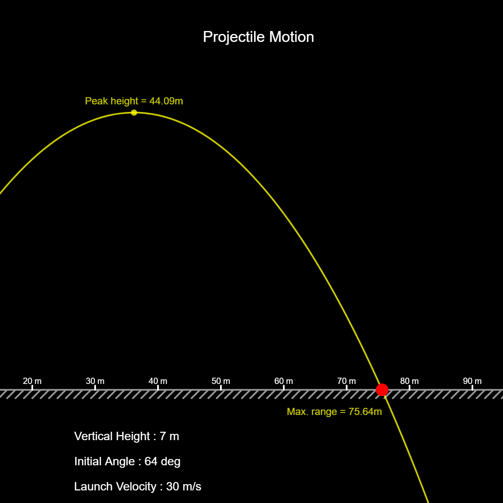
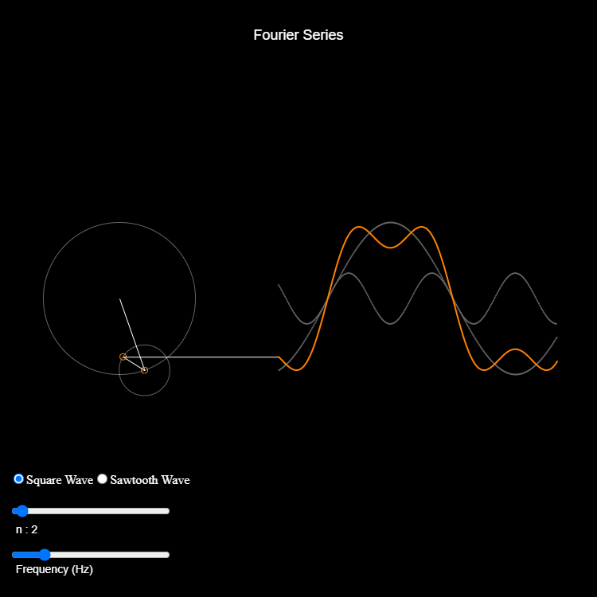

Sample Interactions / Visualizations
Projectile motion is visualized in this interactive sketch with the ability to modify launch velocity, angle of release and initial height in realtime.
A fourier series is visualized with the ability to swap between two different Signal types while controlling the frequency and the number of waverforms.
This interactive visualization responds to mouse movement in realtime whilst tracking the sine and cosine values of the angle thus formed.

Mapping of an area of intersection between 4 different curves, 3 of which are static while the 4th one changes position based on the mouse position.

This is an artistic visualization of the relationship between the sine and cosine functions : sin(x) = cos(90-x).

This non-interactive visualization demonstrates the formation of a cone by rotating a right triangle about a circle.

About Us
We are a generative art and design studio. One of our key offerings is to create customised e-educational content for high school and pre-university curriculums. We seek to help e-learning platforms engage their students better through real time, interactive visualisations of concepts that aid in better learning.
Our code based e-learning content is developed to give them better portability over platforms, flexibility to incorporate design changes and interactive features for the user to explore and learn. Our content is interactive in real-time as opposed to the traditional keyframe animations that have no such offering.
We also specialise in adaptive branding and creation of art installations using data and code.
Founders:
Karthik Dondeti
B.Arch, School of Planning and Architecture, New Delhi, India
Karthik is an architect, computational designer and generative artist. He has an extensive experience in Computational Design having worked with leading International Research Institutes including Sustainable Design Laboratory at MIT USA, and Visual Computing Group at Harvard University.
Ashwin Iyer
BE, Electronics & Communications, RVCE, India
Ashwin is an artist with over 17 years of experience in UI / UX space in diverse industries. A veteran ex-Infoscion, Ashwin understands the nuances of both art and technology.
Contact Us
We are reachable at contact@codebale.studio
Website - https://www.codebale.studio/